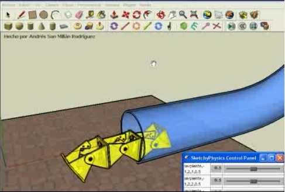

Andrés San Millán Rodriguez, estudiante de Ingeniería Industrial en la Universidad de Castilla-La Mancha (en Ciudad Real), ha realizado esta impresionante simulación de un robot modular compuesto de tres módulos y1 con conexión de cabeceo-cabeceo (Configuración PPP):
La simulación está hecha con Google Sketchup. De momento sólo está disponible para Mac y Windows, pero funciona en Linux con Wine 1.1. Todavía no lo he probado, pero cuando lo haga pondré una entrada en el blog.

A Andrés lo conocí cuando vino a visitarme junto con Francisco Ramos y Enrique Holgado.
Sin duda, este estudiante es una gran promesa en el campo de la robótica modular. En breve os enseñaré el nuevo módulo que tiene diseñado, pero eso será en otra entrada 😉